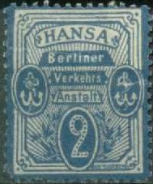
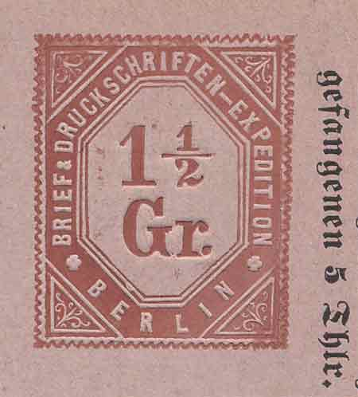
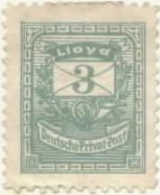
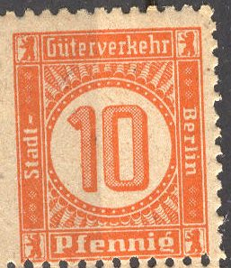

Return To Catalogue - Berlin local issues 19th century, part 1 - Germany - Other local issues
Note: on my website many of the
pictures can not be seen! They are of course present in the
catalogue;
contact me if you want to purchase it.

2 p blue (anchors at the sides and value at the bottom) 2 p yellow (anchor at the bottom and value at the sides) 3 p red (anchors at the sides and value at the bottom) 3 p green (anchor at the bottom and value at the sides)
The 2 p yellow and 3 p green were only valid for 1 day! The 2 p blue and 3 p red exist in two types, with and without dots in the corners:

(Without and with dots in the corners)
Usually these stamps are perforated, but I have seen imperforate stamps of the values: 2 p yellow, 3 p green and 3 p red. The 2 p blue and 3 p red (both in the type with dots) exist on normal paper or thin paper.
Postcards, example:
I have also seen a "HANSA ZETTEL" with a impression similar to a 3 p red stamp, it was cancelled in 1886.
(Cancelled to order? with "HANSA 8 19.NOV.86II Berliner
Verkehrs-Anstalt")
2 p blue 3 p red 10 p green
These stamps are perforated 11 1/2. Reprints exist (perforated and, if my information is correct all imperforate stamps are reprints).
(3 p with cancel, reduced size)
Postcards:
I have seen postal stationery in the values: 2 p blue, 3 p red and 10 p green.
2 p black on lilac
Postal stationery from this company:

"BRIEF & DRUCKSCHRIFTEN-EXPEDITION BERLIN 1 1/2
Gr."
3 pfennig black "Correspondenz = Karte" in a similar
design
The text of this card is: 'J.J. Schreiber's Brief- und Druckschriften- Expedition Berlin Mandat.'.

2 p red 3 p green 10 p brown
These stamps have either perforation 11 1/2 or are imperforate.
Postcard in the same design, example:
(Reduced sizes)
1 p blue 2 p green 3 p brown 10 p red
These stamps have perforation 11 1/2. A 10 p red postcard exists in the same design, the inscription reads 'Exprefl: Privatpost: Kartenbrief'. I have also seen envelope cuts of the 2 p green and 3 p brown. Other example: overprinted with black ink and a 3 p german stamp attached (cut from the postcard):
(Reduced size)
2 p green and red 3 p violet and yellow
These stamps have perforation 11 1/2.
(Reduced sizes0
1 p red 1 1/2 p green 2 p orange 5 p blue
These stamps have perforation 11 1/2.

(railroad parcel stamp)
This railroad parcel stamps was issued in 1944, several values exist: 10 p orange, 30 p green, 40 p blue, 60 p green, 80 p lilac, 1.20 Mviolet, 1.50 M red, 1.60 M violet, 1.80 M blue, 2 M green, 2.40 M brown and 10 M grey.
Private stamp for a butcher(?) association:
The above stamp seems to have been issued in 1887, another stamp in a different design was issue in 1888 (sorry, no picture available yet).
These stamps were issued somewhere from 1906 to 1908. The company didn't deliver many letters due to legal problems with the state post. It seems, that besides the shown 5 p blue, also a 3 p brown and 10 p red were issued (I haven't seen them).
This parcel company issued 4stamps in the below shown design (5 p lilac, 10 p red, 20 p blue and 50 p grey). In 1890 3 new values in different designs were issued (sorry, no picture available yet).
(Reduced size)
{kind=link}
{kind=link}
{kind=link}
{kind=link}